What Segment Routing over IPv6 is, how it carries VPNs across a provider core, and a guided tour of a lab where every piece of it runs on real routers.
docs/srv6-walkthrough.pdf), goes further into every table.An ordinary IP router makes one decision per packet: where is the destination, and which neighbour is closest to it? Every router on the way makes that same decision again, independently, from its own routing table. That is simple and robust, and it is also all it can do. A service provider needs more:
10.0.0.0/8). Their traffic must never mix.For twenty years the answer was MPLS: put a small label in front of the packet and let every router forward on the label instead of the address. Labels mark which customer a packet belongs to (the VPN label) and which path it takes (the transport label). It works well, but it is a second forwarding plane next to IP, with its own signalling protocols (LDP, RSVP-TE) that every router must run and keep in step.
SRv6 does the same jobs with nothing but IPv6. The instructions that MPLS encoded as labels become IPv6 addresses. A router that only understands IPv6 can carry an SRv6 packet without knowing anything about it — and the routers that do need to act on it find the instruction in the destination address, where they look anyway.
Segment routing turns routing around. Instead of every router deciding the path on its own, the router where a packet enters the network decides, and writes the plan into the packet as an ordered list of instructions — segments. The routers along the way just execute the next instruction. They keep no per-flow or per-path state: all the state travels with the packet.
Think of it as a travel itinerary handed to a courier at the depot: "to the Leeds hub, then the Manchester hub, then deliver to 12 High Street, office 4." The hubs do not need to know about the parcel in advance; they read the next line of the itinerary.
Segment routing exists in two flavours: SR-MPLS, where each segment is an MPLS label, and SRv6, where each segment is an IPv6 address. This lab runs SRv6.
In SRv6 each segment is called a SID (Segment Identifier), and a SID is a 128-bit IPv6 address. What makes an address a SID is only that some router has been told: "when a packet arrives addressed to this, do the following." That "following" is the SID's behaviour.
To keep this orderly, every SRv6 router owns a locator — a block of addresses announced into the routing protocol like any prefix, so the whole network knows how to reach it. The router then carves its SIDs out of its own locator. A SID therefore has two halves: the locator says which router, the function says what to do there.
Because the locator is an ordinary routed prefix, a router that is not the SID's owner simply forwards the packet towards the locator, exactly as it would forward any IPv6 packet. Only the owner looks at the function. This is the property everything else rests on.
| Behaviour | Name in the lab | What the owner does with the packet | Used for |
|---|---|---|---|
| End | uN | "I was a waypoint": move on to the next segment and forward | a node on a chosen path |
| End.X | uA | move on, and send out of this particular link | a link on a chosen path; fast reroute |
| End.DT4 / DT6 / DT46 | uDT46 | remove the SRv6 wrapping and look the inner packet up in a given VRF | the end of a VPN: deliver to the customer |
| H.Encaps | (the PE's encapsulation) | wrap a customer packet in a new IPv6 header with a segment list | the start of a VPN or a steered path |
The names come from RFC 8986 (SRv6 Network Programming). The "u" names are the micro-SID (uSID) versions of the same behaviours (section 6).
When a customer packet enters the core, the entry router (here a PE) does not touch it. It puts it, whole, inside a new IPv6 packet — encapsulation. The outer header's destination address is the first SID. If more than one segment is needed, the rest go into an IPv6 extension header built for the purpose, the Segment Routing Header (SRH, RFC 8754), with a counter, Segments Left, that says which segment is next.
Two consequences are worth holding on to:
Routers still need to learn the SIDs. SRv6 reuses the protocols a provider runs anyway, with small extensions — no LDP, no RSVP.
A 128-bit SID per segment is generous. A three-hop path would need three full addresses in the SRH — 48 bytes of segments per packet. Micro-SIDs (uSID, standardised as compressed SIDs in RFC 9800) pack several instructions into one address. In this lab each router's identity is only 16 bits (the node field), so after the 32-bit block there is room for up to six 16-bit micro-SIDs in one 128-bit address.
Each router that owns the next micro-SID does one simple thing: shift the rest of the address left by 16 bits and forward it again. The address itself becomes the itinerary.
The SRH shrinks from three segments to one, and only the destination address changes hop by hop — which is what every router's hardware already rewrites cheaply. In this lab the kernel calls this the NEXT-C-SID flavour of End; the lab's steering tool can also install the classic uncompressed three-segment list, so you can compare the two.
A Layer-3 VPN gives each customer (a tenant) its own private routing domain across the shared core. The building blocks:
| Piece | What it is | In this lab |
|---|---|---|
| VRF | a separate routing table on the PE for one customer | tenant-a (table 100), tenant-b (table 200) on every PE and CE |
| Attachment circuit | the link from the customer's router (CE) into that VRF | 172.16.n.0/30 (tenant-a), 172.18.n.0/30 (tenant-b) |
| RD (route distinguisher) | a prefix that keeps overlapping customer routes apart inside BGP | 65000:10n, 65000:20n |
| RT (route target) | a tag saying which VRFs import a route — the actual membership | 65000:100, 65000:200 |
| Service SID | the End.DT46 SID that leads into that VRF on that PE | one per tenant per PE, allocated by BGP |
| MPLS L3VPN | SRv6 L3VPN (this lab) | |
|---|---|---|
| Forwarding in the core | on labels; every core router must run MPLS | on IPv6 addresses; the core only needs IPv6 routing |
| Transport signalling | LDP or RSVP-TE on every router | none — IS-IS announces locators |
| Customer identity | a VPN label from BGP | a service SID from BGP (End.DT4/DT6/DT46) |
| Choosing a path | RSVP-TE tunnels (state on every hop) or SR-MPLS | a segment list in the packet; no state in the core |
| Header cost | 4 bytes per label | 40-byte IPv6 header + SRH (uSID keeps it small) |
| Troubleshooting | label tables, show mpls |
ordinary IPv6 tools: ping, traceroute, tcpdump see the SIDs |
| Term | Meaning |
|---|---|
| SID | Segment Identifier — an IPv6 address that names an instruction on one router |
| Locator | the part of a SID that says which router; announced by IS-IS (fd00:c:3::/48 = pe3) |
| Function | the part of a SID that says what to do there (e001) |
| Behaviour | the standard action behind a function: End, End.X, End.DT46 … (RFC 8986) |
| SRH | Segment Routing Header — the IPv6 extension header that holds the segment list (RFC 8754) |
| uSID / C-SID | micro-SID: 16-bit instructions packed several to an address, consumed by shifting (RFC 9800) |
| uN / uA / uDT46 | the micro-SID forms of End, End.X and End.DT46 |
| PE / P / CE | Provider Edge (has the customer VRFs), Provider core router (only IPv6), Customer Edge (the customer's router) |
| VRF | a separate routing table for one customer on a PE or CE |
| RD / RT | Route Distinguisher (keeps routes apart in BGP) / Route Target (decides which VRFs import a route) |
| RR | Route Reflector — a BGP router that relays VPN routes so PEs need not all peer with each other |
| Encapsulation | wrapping the customer's packet in a new IPv6 header (H.Encaps) |
| BMP | BGP Monitoring Protocol (RFC 7854): a router streams copies of its BGP tables to a monitoring station, as they change |
| Loc-RIB / Adj-RIB-In | a router's own best routes (what it uses and passes on) / the routes exactly as one neighbour sent them, before any policy |
The lab is a small service-provider network, simulated on one Linux host with KVM. Every router is a real VyOS router (FRR inside) running its production software; every customer host is a real Alpine Linux VM.
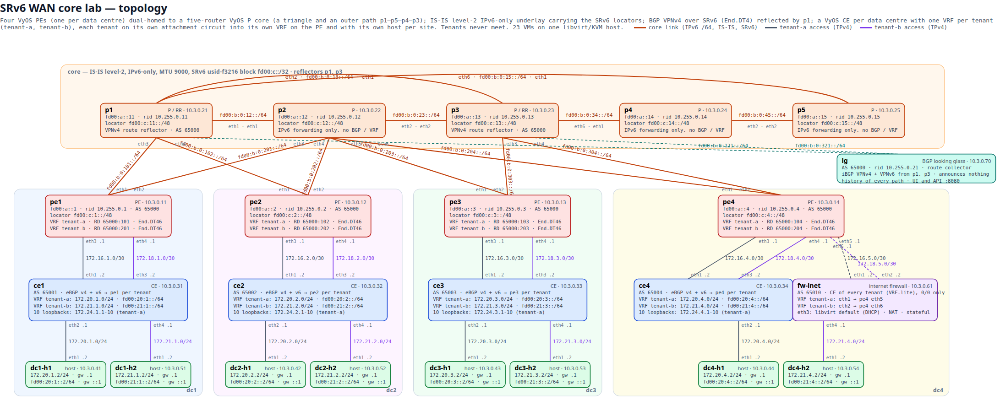
| Role | Nodes | What they do |
|---|---|---|
| P routers | p1, p2, p3 | the core triangle: IS-IS, SRv6, plain IPv6 forwarding. p1 and p3 are also BGP route reflectors; p2 runs no BGP at all |
| PE routers | pe1 – pe4 | one per data centre: the tenant VRFs, the eBGP sessions to the CEs, SRv6 encapsulation and decapsulation |
| CE routers | ce1 – ce4 | the customer side of each site: one VRF per tenant, a LAN per tenant, ten extra loopbacks for tenant-a |
| Hosts | dcn-h1 (tenant-a), dcn-h2 (tenant-b) | Alpine Linux with ping, traceroute, iperf3, tcpdump — the "customers" |
| fw-inet | one firewall on pe4 | a CE of every tenant that gives each site a NAT'd way out to the internet |
| lg | the looking glass | a passive route collector, fed by the route reflectors over BMP, with history, packet capture and path tracing |
| NMS | Prometheus, VictoriaMetrics, Grafana, Gitea | monitoring, alerting, the CI runner's Git mirror |
pe1 and pe2 hang off p1 and p2; pe3 and pe4 off p2 and p3. So every west↔east path crosses p2 by default — a fact the tests and the steering examples use.
| What | Range | Example |
|---|---|---|
| Loopbacks (core) | fd00:a::/48 |
pe1 fd00:a::1, p2 fd00:a::12 |
| Core links | fd00:b:0:<ab>::/64 |
p2–pe1 fd00:b:0:201::/64 |
| SRv6 locators | fd00:c:<node>::/48 from block fd00:c::/32 |
pe3 fd00:c:3::/48, p1 fd00:c:11::/48 |
| tenant-a | circuits 172.16.n.0/30, LANs 172.20.n.0/24 |
dc3-h1 = 172.20.3.2 |
| tenant-b | circuits 172.18.n.0/30, LANs 172.21.n.0/24 |
dc3-h2 = 172.21.3.2 |
| IPv6 twins | 172.X.Y.0 ↔ fd00:X:Y::/64 |
LAN 172.20.1.0/24 ↔ fd00:20:1::/64 |
| Management (OOB) | 10.3.0.0/24 |
pe1 10.3.0.11, dc1-h1 10.3.0.41 |
./lab.sh up # start every VM (about six minutes from cold)
./lab.sh status # every node and link with its addresses
./lab.sh ssh pe1 # a router (vyos / vyos); hosts are lab / lab
./lab.sh verify # adjacencies, SIDs, VPN routes, the host ping matrix
./lab.sh test # the Robot Framework suites
./lab.sh down # shut everything down; configurations are saved
The portal (http://<lab-host>:8091) is where tenants are created, changed and watched. Everything it does goes through the same steps an engineer would take — edit lab.conf, render configurations, push them over SSH, update Nautobot, verify, test — as a run you can follow line by line.
Tenants. One card per tenant with every site: the PE port, route distinguisher, attachment circuit, CE ports, LAN and host, joined with live state read from the routers — the eBGP session to the CE, how many routes the VRF holds, how many of them go through SRv6, and the tenant's End.DT46 SID on that PE.
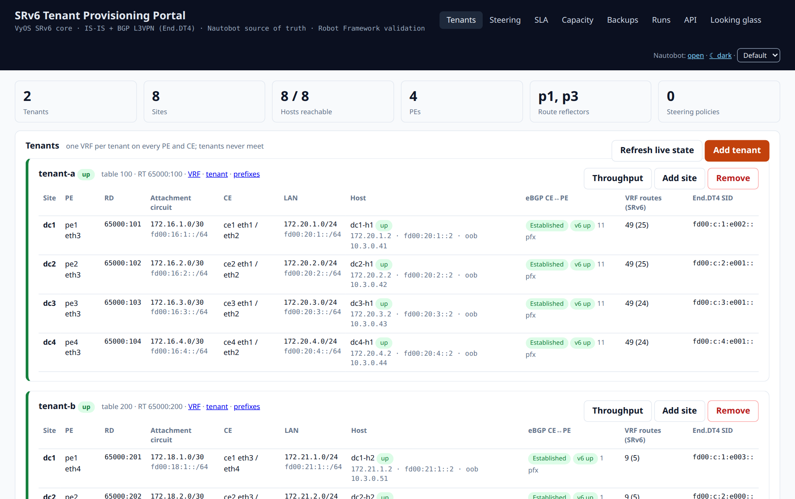
Topology. The same network drawn live, hosts coloured by whether they answer. Add tenant opens a three-step wizard that suggests everything (letter, table, route target, ports, addresses, hosts), re-validates it against the running lab, and deploys it as a run.
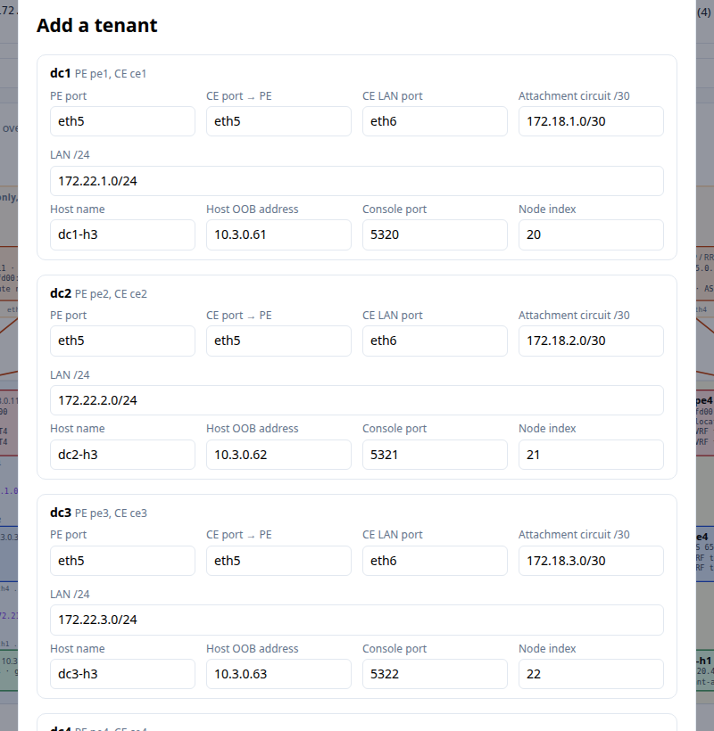
Steering — on the map. Pin a tenant prefix on a PE to a path through chosen P routers. Preview draws the path before it is applied: the dashed grey line is the IGP shortest path, the coloured one the path the policy would take. After Apply, Measure delay pings both from the PE inside the tenant's VRF.
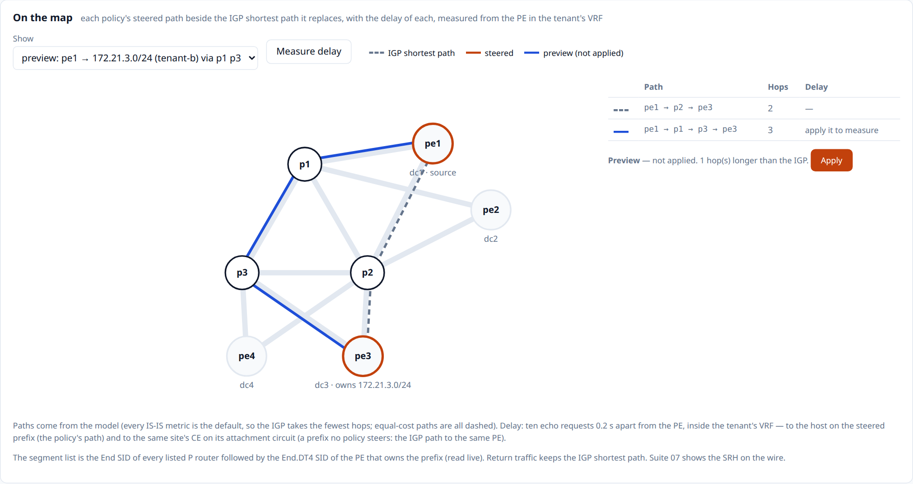
SLA. Every minute each tenant host pings every other site of its tenant, and each pair is graded against delay and loss targets. The matrix shows the last probe; a pair's history is one click away. A pair that changes state is annotated in Grafana, and alert rules fire on the same numbers.
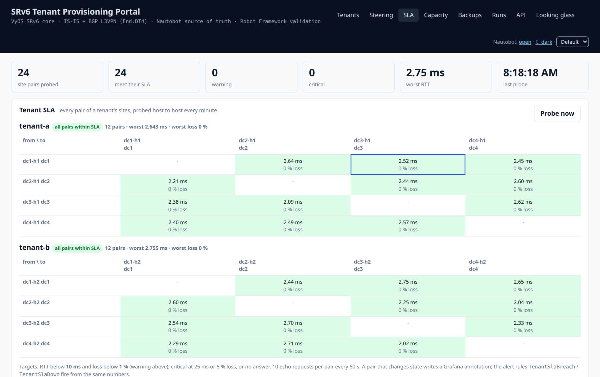
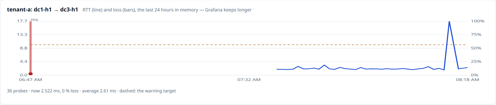
Capacity. How many more tenants fit — at every data centre and at each one — and which limit runs out first: PE or CE ports, tenant letters, address blocks, firewall circuits, host memory.
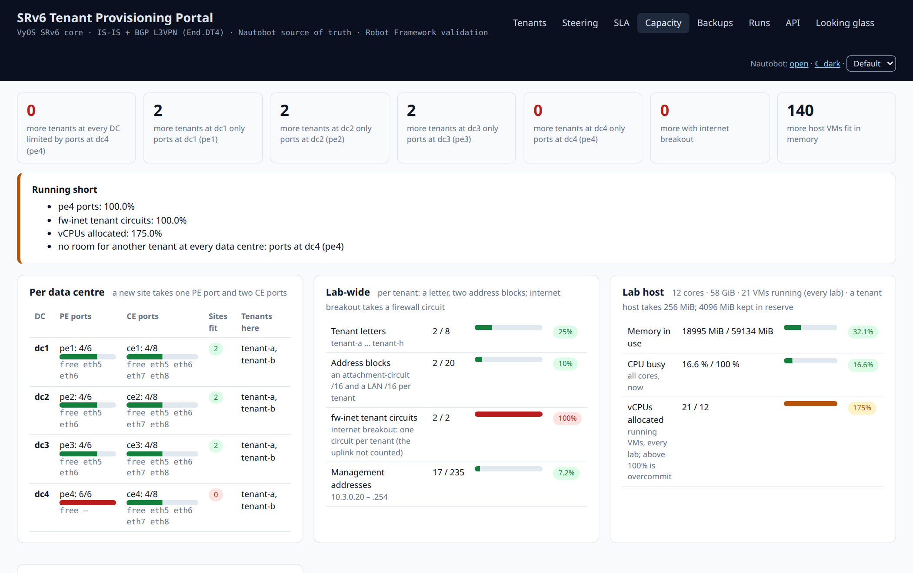
Backups. The whole lab state in one checksummed file (lab.conf, the steering policies, every router's configuration). A restore first shows its plan — tenants to add or remove, steering to put back — and then runs like any other change.
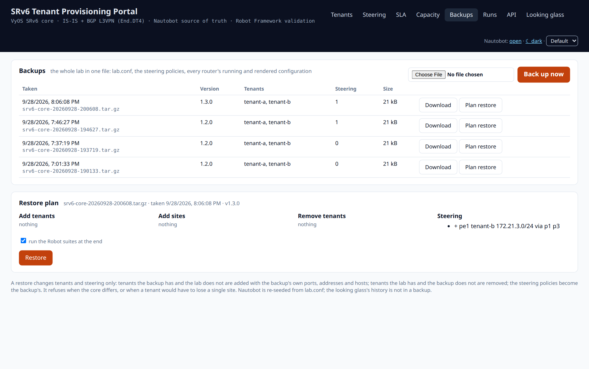
Runs. Every change as steps with a streamed log and, at the end, the Robot Framework report. A failed run can be resumed from the step that failed.
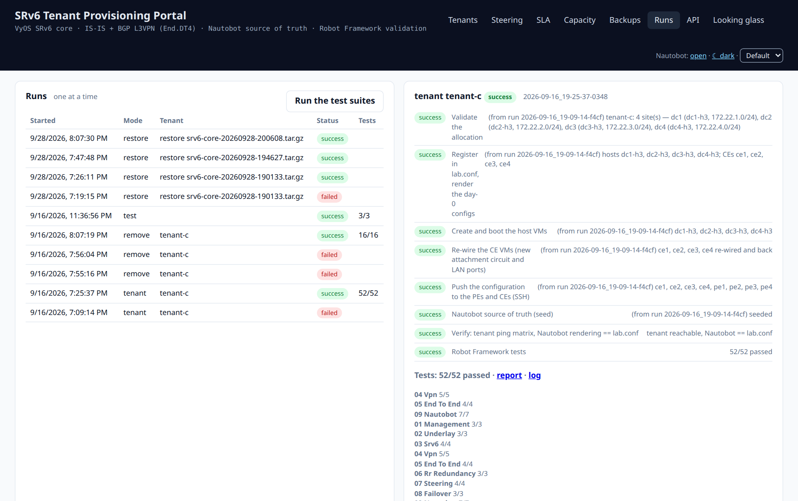
The looking glass (http://10.3.0.70:8080) is a passive route collector inside the core. It holds every VPN route with the attributes the PE gave it, and it also reads each router's own tables over the router API. Everything it sees is kept as history, so you can ask what the network looked like at any moment.
How the routes get there: BMP. The two route reflectors push their tables to the looking glass over BMP, the BGP Monitoring Protocol (RFC 7854). Each reflector opens a connection to it, replays its whole table once, and from then on sends a copy of every update as it happens, so the looking glass is never more than a moment behind. Two copies of the table come with each update:
On p1 the connection looks like this. It monitors the VPNv4 and VPNv6 tables, both before policy and the Loc-RIB:
p1> show bmp
BMP state for BGP VRF default:
Route Mirroring 0 bytes (0 messages) pending
0 bytes maximum buffer used
Targets "lg":
Route Mirroring disabled
Route Monitoring IPv4 vpn pre-policy loc-rib
Route Monitoring IPv6 vpn pre-policy loc-rib
Listeners:
Outbound connections:
remote state timer local
------------------------------------------------------------------------------
fd00:b:0:121::2:11019 Up fd00:b:0:121::2:11019 00:24:49 (unspec)
1 connected clients:
remote uptime MonSent MirrSent MirrLost ByteSent ByteQ ByteQKernel
----------------------------------------------------------------------------------------------------
fd00:b:0:121::2:11019 00:24:49 586 0 0 116860 0 0
The looking glass decodes BMP itself, down to the SRv6 SID (Step 4 shows one route). Every row it shows says how it arrived: BMP Loc-RIB, BMP pre-policy, or the router's API or SSH.
Why not an ordinary BGP session? Until version 1.7 the looking glass held one, as a client of each reflector. That works, but a client only ever receives the reflector's best route, never what each PE actually sent, and it gets nothing about the reflector's own sessions. BMP gives all three. (LG_FEED=session in lab.conf still switches back.)
Overview. The BMP feeds from both reflectors, the size of the VPN table, recent churn, and the topology — click any link to capture its packets.
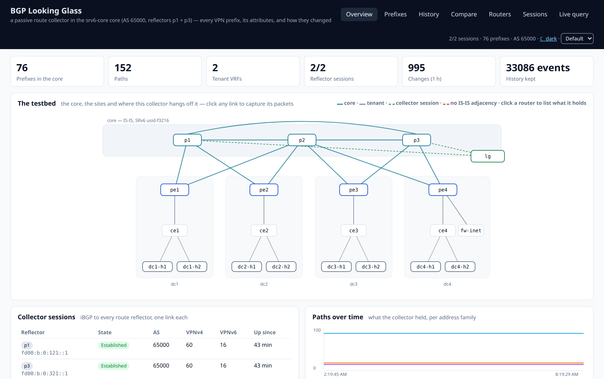
Prefixes. Every VPN prefix with its route distinguisher, route target, next hop and the SRv6 SID it points to, filterable by VRF, RD, origin AS or free text.
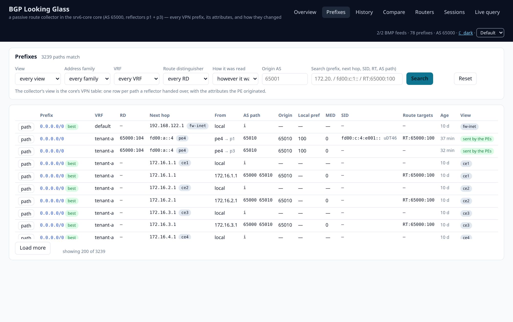
Path. For one prefix, the path a packet really takes: from the ingress PE's VRF, through the P router the PE actually forwards through, to the egress PE and its SID — read from the routers, not guessed.
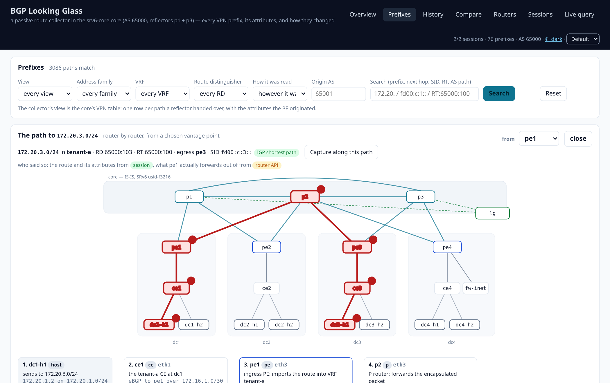
History and Compare. Every announce, change and withdraw, with a time slider that shows any table as it was. Compare lists every path that moved between two moments, down to a single next hop's SID.
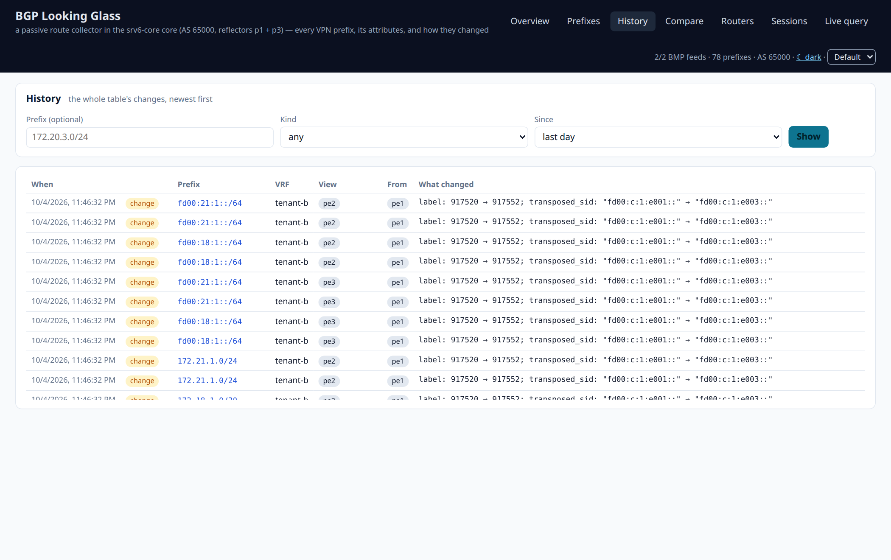
Sent by the PEs. Choose the view sent by the PEs on the Prefixes page: one row for each route each PE announced, once per reflector that heard it (From says pe1 → p1). Here are tenant-a's LANs as their PEs sent them. The SID column shows the full SID each route leads to, with the transposed function put back.
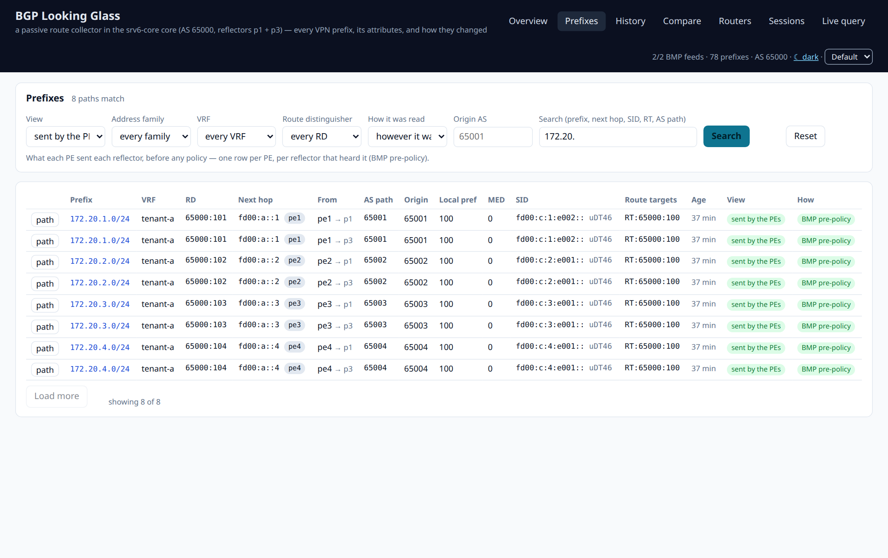
Sessions. The BMP feeds (connected, finished replaying, how many routes each holds) and, below them, every reflector's own BGP sessions to the PEs as the reflector reports them. A session that went down says why.
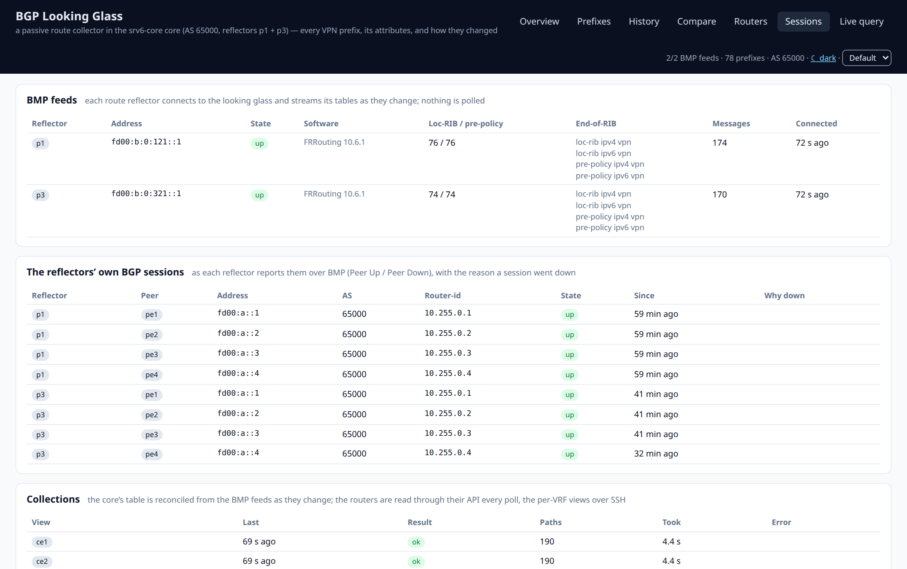
Packet capture. Click any link on the map to capture on it — live, streamed into the page — or capture along a prefix's whole path at once and watch each ping hop by hop: plain IPv4 on the access links, SRv6-encapsulated in the core.
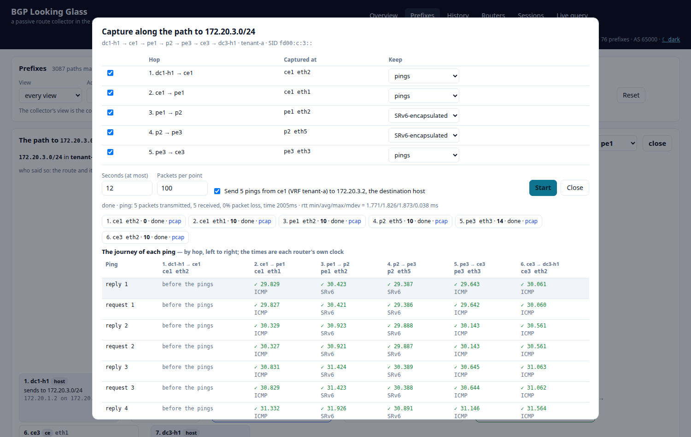
Nautobot holds the lab as a model: devices, interfaces, cables, IP addresses, VRFs with their RDs and RTs, BGP peerings. It is seeded from lab.conf, and the lab checks itself against it both ways — the configuration Nautobot would render must equal the one lab.conf renders, and every line must be present on the routers.
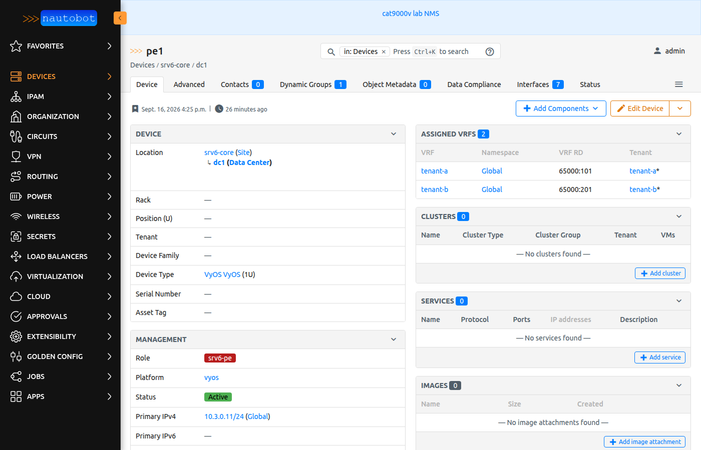
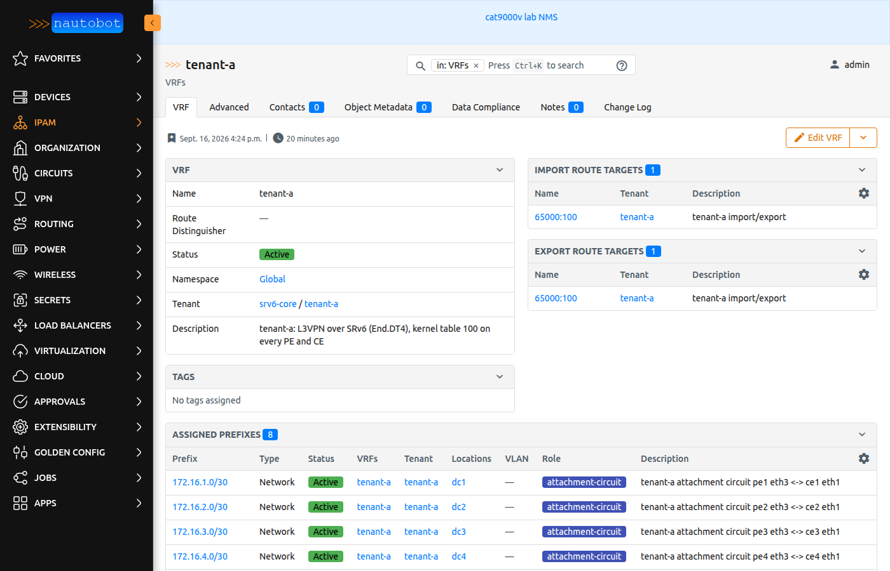
The NMS VM runs Prometheus (scraping node-exporter and frr-exporter on every router, node-exporter on every host, and the portal's own /metrics), VictoriaMetrics for longer retention, VictoriaLogs for every router's syslog, and Grafana for dashboards. Alert rules cover the things an operator cares about: a host or a CE session down, an IS-IS or BFD adjacency missing, a VPN session down, a tenant outside its SLA, failed tests, and a notice when there is no room left for another tenant. Portal runs, steering changes and SLA state changes all appear as annotations on every dashboard.
./lab.sh test runs sixteen Robot Framework suites — 109 checks — against the live lab: management, the underlay, SRv6, the VPNs, end to end reachability, route-reflector redundancy, steering, failover (a link cut with BFD: 4 packets lost), Nautobot, throughput, monitoring, dual-stack, internet breakout, the looking glass and the portal's operations features. Before and after, every router's configuration and routing tables are saved; the difference must be empty. Each push to GitHub is mirrored to a local Gitea whose runner validates the configurations and runs the suites.
Open two terminals on the lab host. Everything below uses ./lab.sh ssh <node> to log in (VyOS routers: vyos/vyos; hosts: lab/lab). On a VyOS router, pe1> marks the operational CLI (show …) and pe1$ the Linux shell underneath (ip …, tcpdump), where the SRv6 forwarding actually happens, where the SRv6 forwarding actually happens. We follow one ping from dc1-h1 (tenant-a, data centre 1) to dc3-h1 (tenant-a, data centre 3).
On dc1-h1 the world is small: an address on its LAN and a default route to its CE.
dc1-h1$ ip -br addr; ip route
lo UNKNOWN 127.0.0.1/8 ::1/128
eth0 UP 10.3.0.41/24 fe80::5054:ff:fec6:c00/64
eth1 UP 172.20.1.2/24 fd00:20:1::2/64 fe80::5054:ff:fec6:c01/64
default via 172.20.1.1 dev eth1
10.0.0.0/8 via 10.3.0.1 dev eth0
10.3.0.0/24 dev eth0 proto kernel scope link src 10.3.0.41
172.20.1.0/24 dev eth1 proto kernel scope link src 172.20.1.2
It reaches the tenant-a host in data centre 3…
dc1-h1$ ping -c 3 172.20.3.2
PING 172.20.3.2 (172.20.3.2): 56 data bytes
64 bytes from 172.20.3.2: seq=0 ttl=42 time=1.970 ms
64 bytes from 172.20.3.2: seq=1 ttl=42 time=1.966 ms
64 bytes from 172.20.3.2: seq=2 ttl=42 time=2.039 ms
--- 172.20.3.2 ping statistics ---
3 packets transmitted, 3 packets received, 0% packet loss
round-trip min/avg/max = 1.966/1.991/2.039 ms
…and cannot reach the tenant-b host in its own data centre, one hop away on the same CE:
dc1-h1$ ping -c 2 172.21.1.2
PING 172.21.1.2 (172.21.1.2): 56 data bytes
--- 172.21.1.2 ping statistics ---
2 packets transmitted, 0 packets received, 100% packet loss
The traceroute shows the customer never sees the core: the hop between the two PEs is invisible (*), because inside the core the packet is inside an IPv6 envelope.
dc1-h1$ traceroute -n 172.20.3.2
traceroute to 172.20.3.2 (172.20.3.2), 30 hops max, 46 byte packets
1 172.20.1.1 0.004 ms
2 *
3 172.16.3.2 1.728 ms
4 172.20.3.2 1.709 ms
On pe1, IS-IS has two neighbours — the P routers it is cabled to:
pe1> show isis neighbor
Area VyOS:
System Id Interface L State Holdtime SNPA
p1 eth1 2 Up 29 2020.2020.2020
p2 eth2 2 Up 28 2020.2020.2020
pe1 owns one locator, and it is up:
pe1> show segment-routing srv6 locator
Locator:
Name ID Prefix Status
-------------------- ------- ------------------------ -------
main 1 fd00:c:1::/48 Up
Through IS-IS, pe1 has learnt every other router's locator as an ordinary IPv6 route. pe3's fd00:c:3::/48 goes via p2 (the fe80::…603 neighbour on eth2) — the IGP shortest path:
pe1$ vtysh -c 'show ipv6 route isis' | grep fd00:c: | head -12
I>* fd00:c:1::/48 [115/0] is directly connected, dum0, seg6local uN, weight 1, 00:37:38
I>* fd00:c:1:e002::/64 [115/0] is directly connected, eth2, seg6local uA nh6 fe80::5054:ff:fec6:603, eth2, weight 1, 00:37:38
I>* fd00:c:1:e003::/64 [115/0] is directly connected, eth1, seg6local uA nh6 fe80::5054:ff:fec6:503, eth1, weight 1, 00:37:38
I>* fd00:c:2::/48 [115/20] via fe80::5054:ff:fec6:503, eth1, weight 1, 00:37:11
I>* fd00:c:2::1/128 [115/30] via fe80::5054:ff:fec6:503, eth1, weight 1, 00:37:11
I>* fd00:c:3::/48 [115/20] via fe80::5054:ff:fec6:603, eth2, weight 1, 00:37:12
I>* fd00:c:3::1/128 [115/30] via fe80::5054:ff:fec6:603, eth2, weight 1, 00:37:12
I>* fd00:c:4::/48 [115/20] via fe80::5054:ff:fec6:603, eth2, weight 1, 00:37:12
I>* fd00:c:4::1/128 [115/30] via fe80::5054:ff:fec6:603, eth2, weight 1, 00:37:12
I>* fd00:c:11::/48 [115/10] via fe80::5054:ff:fec6:503, eth1, weight 1, 00:37:37
I>* fd00:c:11::1/128 [115/20] via fe80::5054:ff:fec6:503, eth1, weight 1, 00:37:37
I>* fd00:c:12::/48 [115/10] via fe80::5054:ff:fec6:603, eth2, weight 1, 00:37:37
The kernel's table of local SIDs is where behaviours become real. On pe1: the node SID (End, uN) on the whole locator, one End.X (uA) per core link, and one End.DT46 per tenant VRF:
pe1$ ip -6 route show | grep seg6local
fd00:c:1:e000:: nhid 45 encap seg6local action End.DT46 vrftable tenant-b dev tenant-b proto bgp metric 20 pref medium
fd00:c:1:e001:: nhid 39 encap seg6local action End.DT46 vrftable tenant-a dev tenant-a proto bgp metric 20 pref medium
fd00:c:1:e002::/64 nhid 42 encap seg6local action End.X nh6 fe80::5054:ff:fec6:603 oif eth2 flavors next-csid lblen 32 nflen 16 dev eth2 proto isis metric 20 pref medium
fd00:c:1:e003::/64 nhid 43 encap seg6local action End.X nh6 fe80::5054:ff:fec6:503 oif eth1 flavors next-csid lblen 32 nflen 16 dev eth1 proto isis metric 20 pref medium
fd00:c:1::/48 nhid 37 encap seg6local action End flavors next-csid lblen 32 nflen 16 dev dum0 proto isis metric 20 pref medium
fd00:c:1:e00x:: … action End.DT46 vrftable tenant-a" means: a packet addressed to this SID is to be unwrapped and looked up in tenant-a's table. The function values (e000, e001 …) are chosen by FRR when the SIDs are allocated, so they can differ between your lab and this guide.pe3 learnt 172.20.3.0/24 from ce3, allocated an End.DT46 SID for tenant-a, and advertised both to the route reflectors. pe1 receives the route twice (once from each reflector), tagged with route target 65000:100 — which is why only VRF tenant-a imports it:
pe1> show bgp ipv4 vpn 172.20.3.0/24
BGP routing table entry for 65000:103:172.20.3.0/24, version 2
not allocated
Paths: (2 available, best #1)
Not advertised to any peer
65003
0.0.0.0 (metric 20) from fd00:a::11 (10.255.0.3)
Origin IGP, metric 0, localpref 100, valid, internal, multipath, best (Neighbor IP)
Extended Community: RT:65000:100
Originator: 10.255.0.3, Cluster list: 10.255.0.11
Remote labels: 917520
Remote SID: fd00:c:3::, sid structure=[32 16 16 0 16 48]
Last update: Tue Sep 29 11:37:16 2026
65003
0.0.0.0 (metric 20) from fd00:a::13 (10.255.0.3)
Origin IGP, metric 0, localpref 100, valid, internal, multipath
Extended Community: RT:65000:100
Originator: 10.255.0.3, Cluster list: 10.255.0.13
Remote labels: 917520
Remote SID: fd00:c:3::, sid structure=[32 16 16 0 16 48]
Last update: Tue Sep 29 11:37:16 2026
The "Remote SID" line and the "Remote labels" value together make the full SID: BGP sends the locator part in the SID field and the function in the label field ("transposition"), which saves space when many routes share a locator.
The looking glass receives the same route from the reflectors over BMP and does that sum for you. Here it is as it holds it:
GET http://10.3.0.70:8080/api/prefixes?source=collector&vrf=tenant-a&prefix=172.20.3.0/24&best_only=1
{
"rd": "65000:103",
"prefix": "172.20.3.0/24",
"nexthop": "fd00:a::3",
"peer_name": "p1",
"via": "bmp-loc-rib",
"ext_communities": "RT:65000:100",
"sid": "fd00:c:3::",
"label": 917520,
"sid_structure": {
"argumentLen": 0,
"functionLen": 16,
"locatorBlockLen": 32,
"locatorNodeLen": 16,
"transpositionLen": 16,
"transpositionOffset": 48
},
"transposed_sid": "fd00:c:3:e001::",
"behavior": "uDT46"
}
The SID field carries only fd00:c:3::, pe3's locator. The structure says 16 bits were moved out of it (transpositionLen), from bit 48 onwards (transpositionOffset). Those 16 bits travel at the top of the 24-bit label field, 0xE00100. FRR prints that field as the 20-bit label value 917520, which is 0xE0010. Put e001 back at bit 48 and you get fd00:c:3:e001::: pe3's uDT46 instruction for tenant-a, the same SID Step 7 finds installed on pe3.
pe1's tenant-a table now says, for 172.20.3.0/24: wrap it in SRv6, one segment, pe3's tenant-a SID, out towards p2. Local sites go straight to the CE; remote ones all have an encap seg6 instruction:
pe1$ ip route show vrf tenant-a
default nhid 105 encap seg6 mode encap segs 1 [ fd00:c:4:e001:: ] via inet6 fe80::5054:ff:fec6:603 dev eth2 proto bgp metric 20
127.0.0.0/8 dev tenant-a proto kernel scope link src 127.0.0.1
172.16.1.0/30 dev eth3 proto kernel scope link src 172.16.1.1
172.16.2.0/30 nhid 97 proto bgp metric 20
nexthop encap seg6 mode encap segs 1 [ fd00:c:2:e001:: ] via inet6 fe80::5054:ff:fec6:503 dev eth1 weight 1
nexthop encap seg6 mode encap segs 1 [ fd00:c:2:e001:: ] via inet6 fe80::5054:ff:fec6:603 dev eth2 weight 1
172.16.3.0/30 nhid 102 encap seg6 mode encap segs 1 [ fd00:c:3:e001:: ] via inet6 fe80::5054:ff:fec6:603 dev eth2 proto bgp metric 20
172.16.4.0/30 nhid 105 encap seg6 mode encap segs 1 [ fd00:c:4:e001:: ] via inet6 fe80::5054:ff:fec6:603 dev eth2 proto bgp metric 20
172.16.5.0/30 nhid 105 encap seg6 mode encap segs 1 [ fd00:c:4:e001:: ] via inet6 fe80::5054:ff:fec6:603 dev eth2 proto bgp metric 20
172.20.1.0/24 nhid 79 via 172.16.1.2 dev eth3 proto bgp metric 20
172.20.2.0/24 nhid 97 proto bgp metric 20
nexthop encap seg6 mode encap segs 1 [ fd00:c:2:e001:: ] via inet6 fe80::5054:ff:fec6:503 dev eth1 weight 1
nexthop encap seg6 mode encap segs 1 [ fd00:c:2:e001:: ] via inet6 fe80::5054:ff:fec6:603 dev eth2 weight 1
172.20.3.0/24 nhid 102 encap seg6 mode encap segs 1 [ fd00:c:3:e001:: ] via inet6 fe80::5054:ff:fec6:603 dev eth2 proto bgp metric 20
172.20.4.0/24 nhid 105 encap seg6 mode encap segs 1 [ fd00:c:4:e001:: ] via inet6 fe80::5054:ff:fec6:603 dev eth2 proto bgp metric 20
172.24.1.1 nhid 79 via 172.16.1.2 dev eth3 proto bgp metric 20
172.24.1.2 nhid 79 via 172.16.1.2 dev eth3 proto bgp metric 20
172.24.1.3 nhid 79 via 172.16.1.2 dev eth3 proto bgp metric 20
172.24.1.4 nhid 79 via 172.16.1.2 dev eth3 proto bgp metric 20
172.24.1.5 nhid 79 via 172.16.1.2 dev eth3 proto bgp metric 20
172.24.1.6 nhid 79 via 172.16.1.2 dev eth3 proto bgp metric 20
172.24.1.7 nhid 79 via 172.16.1.2 dev eth3 proto bgp metric 20
… (53 more lines)
Capture on p2 while dc1-h1 pings. Each packet is an IPv6 packet from pe1's loopback to pe3's SID, with a one-entry SRH (RT6 … type=4), and the customer's IPv4 packet inside it:
p2$ sudo tcpdump -ni eth5 -c 4 -vv 'ip6 and dst net fd00:c:3::/48' # eth5 = the link to pe3
12:15:03.387621 IP6 (hlim 62, next-header Routing (43) payload length: 108) fd00:a::1 > fd00:c:3:e001::: RT6 (len=2, type=4, segleft=0, last-entry=0, flags=0x0, tag=0, [0]fd00:c:3:e001::) IP (tos 0x0, ttl 63, id 40595, offset 0, flags [DF], proto ICMP (1), length 84)
172.20.1.2 > 172.20.3.2: ICMP echo request, id 103, seq 0, length 64
12:15:03.887745 IP6 (hlim 62, next-header Routing (43) payload length: 108) fd00:a::1 > fd00:c:3:e001::: RT6 (len=2, type=4, segleft=0, last-entry=0, flags=0x0, tag=0, [0]fd00:c:3:e001::) IP (tos 0x0, ttl 63, id 40650, offset 0, flags [DF], proto ICMP (1), length 84)
172.20.1.2 > 172.20.3.2: ICMP echo request, id 103, seq 1, length 64
12:15:04.387867 IP6 (hlim 62, next-header Routing (43) payload length: 108) fd00:a::1 > fd00:c:3:e001::: RT6 (len=2, type=4, segleft=0, last-entry=0, flags=0x0, tag=0, [0]fd00:c:3:e001::) IP (tos 0x0, ttl 63, id 40929, offset 0, flags [DF], proto ICMP (1), length 84)
172.20.1.2 > 172.20.3.2: ICMP echo request, id 103, seq 2, length 64
12:15:04.887947 IP6 (hlim 62, next-header Routing (43) payload length: 108) fd00:a::1 > fd00:c:3:e001::: RT6 (len=2, type=4, segleft=0, last-entry=0, flags=0x0, tag=0, [0]fd00:c:3:e001::) IP (tos 0x0, ttl 63, id 41188, offset 0, flags [DF], proto ICMP (1), length 84)
172.20.1.2 > 172.20.3.2: ICMP echo request, id 103, seq 3, length 64
And p2 has no idea who the customers are. It has no VRFs, and its IPv4 table holds only the management network:
p2$ ip route show vrf tenant-a; ip vrf show
Error: argument "tenant-a" is wrong: Invalid VRF
Name Table
-----------------------
No VRF has been configured
p2$ ip route show # IPv4
10.0.0.0/8 nhid 23 via 10.3.0.1 dev eth0 proto static metric 20
10.3.0.0/24 dev eth0 proto kernel scope link src 10.3.0.22
That is the whole point of SRv6: the core carries VPN traffic with nothing but IPv6 routing.
pe3's SID table has the matching End.DT46 entries. A packet addressed to the tenant-a one is unwrapped and handed to VRF tenant-a, which knows 172.20.3.0/24 is behind ce3:
pe3$ ip -6 route show | grep End.DT4
fd00:c:3:e000:: nhid 45 encap seg6local action End.DT46 vrftable tenant-b dev tenant-b proto bgp metric 20 pref medium
fd00:c:3:e001:: nhid 39 encap seg6local action End.DT46 vrftable tenant-a dev tenant-a proto bgp metric 20 pref medium
By default everything west↔east crosses p2. Pin tenant-b's traffic from pe1 to 172.21.3.0/24 onto the long way round, p1 → p3 → pe3. The steering tool builds a single uSID carrier from the path:
$ ./lab.sh steer add pe1 tenant-b 172.21.3.0/24 p1 p3
pe1: tenant-b 172.21.3.0/24 -> p1 -> p3 -> pe3 segments fd00:c:11:13:3:e000:: (out eth1) [uSID: one compressed segment]
172.21.3.0/24 nhid 142 encap seg6 mode encap segs 1 [ fd00:c:11:13:3:e000:: ] dev eth1 proto static metric 20
Now capture on p1 and then on p3 while dc1-h2 pings dc3-h2. Watch the destination address shrink by one micro-SID at each hop — exactly Figure 5:
p1$ sudo tcpdump -ni eth2 -c 2 -vv 'ip6 and dst net fd00:c::/32' # leaving p1 towards p3: its own 11 consumed
12:16:19.500122 IP6 (hlim 62, next-header Routing (43) payload length: 108) fd00:a::1 > fd00:c:13:3:e000::: RT6 (len=2, type=4, segleft=0, last-entry=0, flags=0x0, tag=0, [0]fd00:c:11:13:3:e000::) IP (tos 0x0, ttl 63, id 63968, offset 0, flags [DF], proto ICMP (1), length 84)
172.21.1.2 > 172.21.3.2: ICMP echo request, id 100, seq 0, length 64
12:16:20.001520 IP6 (hlim 62, next-header Routing (43) payload length: 108) fd00:a::1 > fd00:c:13:3:e000::: RT6 (len=2, type=4, segleft=0, last-entry=0, flags=0x0, tag=0, [0]fd00:c:11:13:3:e000::) IP (tos 0x0, ttl 63, id 64088, offset 0, flags [DF], proto ICMP (1), length 84)
172.21.1.2 > 172.21.3.2: ICMP echo request, id 100, seq 1, length 64
p3$ sudo tcpdump -ni eth3 -c 2 -vv 'ip6 and dst net fd00:c::/32' # leaving p3 towards pe3: only pe3's SID is left
12:16:23.624088 IP6 (hlim 63, next-header Routing (43) payload length: 108) fd00:a::3 > fd00:c:4:e000::: RT6 (len=2, type=4, segleft=0, last-entry=0, flags=0x0, tag=0, [0]fd00:c:4:e000::) IP (tos 0x0, ttl 63, id 52453, offset 0, flags [none], proto ICMP (1), length 84)
172.21.3.2 > 172.21.4.2: ICMP echo reply, id 101, seq 0, length 64
12:16:23.624885 IP6 (hlim 61, next-header Routing (43) payload length: 108) fd00:a::1 > fd00:c:3:e000::: RT6 (len=2, type=4, segleft=0, last-entry=0, flags=0x0, tag=0, [0]fd00:c:11:13:3:e000::) IP (tos 0x0, ttl 63, id 64832, offset 0, flags [DF], proto ICMP (1), length 84)
172.21.1.2 > 172.21.3.2: ICMP echo request, id 102, seq 0, length 64
The reply still takes the shortest path back through p2: steering is per direction. Remove the policy and traffic returns to the IGP path:
$ ./lab.sh steer del pe1 tenant-b 172.21.3.0/24
pe1: tenant-b 172.21.3.0/24 back on the IGP shortest path
172.21.3.0/24 nhid 113 encap seg6 mode encap segs 1 [ fd00:c:3:e000:: ] via inet6 fe80::5054:ff:fec6:603 dev eth2 proto bgp metric 20
p1 p3, and press Preview to see the path on the map; Apply installs it; Measure delay compares it with the IGP path (the long way is roughly one millisecond longer).Every core adjacency runs BFD, which notices a dead neighbour in under a second (the links are tunnels that never lose carrier, so without BFD it would take IS-IS's 30-second hold time):
pe1> show bfd peers brief
Session count: 2
SessionId LocalAddress PeerAddress Status Profile
========= ============ =========== ====== =======
2026629426 fe80::5054:ff:fec6:101 fe80::5054:ff:fec6:503 up -
3077310471 fe80::5054:ff:fec6:102 fe80::5054:ff:fec6:603 up -
Suite 08 (./lab.sh test suites/08_failover.robot) cuts the p2–pe3 link silently while a ping runs every 0.2 s: pe3's routes move to p3 within a second, about four packets are lost, and everything comes back when the link is restored. Try it, and watch the looking glass's History view and the SLA matrix while it happens.
docs/session/exercises.md has break-and-fix exercises for the lab.docs/srv6-walkthrough.pdf goes table by table through dual-stack (End.DT46 for IPv6), the internet breakout, the Linux quirk the PEs work around, and more.